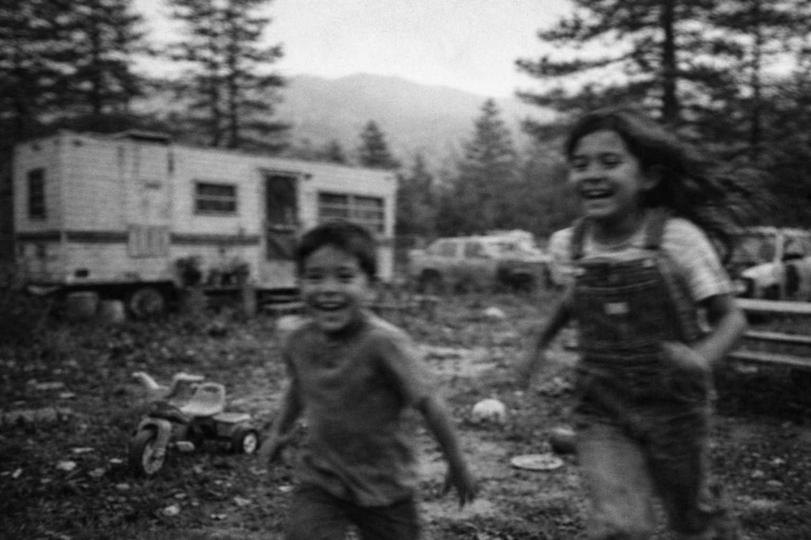

My Dad, A Mexican Washing Machine, and how I learned to fight Fascist
There's this image. And I'm aware of how that sounds, how "there's this image" is the kind of throat-clearing opener you're supposed to edit out, but it's accurate. Anyway, this image I've been carrying around for something like forty-seven or forty-eight years: A corrugated metal tub, the kind you'd use for livestock water or maybe washing car parts, sitting on the back porch of a ramshackle trailer in the Oregon mountains, and this thing is shaking. Not vibrating, shaking, the whole frame juddering so hard you could hear metal rattling against metal. There's a lawnmower engine bolted to some kind of welded frame beside it, and it's running pulleys that spin a wooden paddle through this gray soapy water that smells like detergent mixed with engine oil and probably some kind of runoff from the pine needles that were everywhere up there.
The whole apparatus sounded like it was about to tear itself apart. Like it existed in this permanent state of barely-controlled catastrophic failure.
I was ten years old, which means 1976 or 77, depending on whether this was before or after Star Wars. And honestly, everything in my childhood in the 70s boils down to pre and post Star Wars, i.e. May of 77. That's how I kept time. That's how everything got filed. This was before. And I'm just standing there in cheap sneakers staring at this bulk of metal like a rudimentary transformer that had just stood up on two legs and ask me what I was doing there. yeah, pretty sure I had never seen anything like it and certainly didn't have even the slightest conceptual framework to process what it was I was looking at.
But I got closer, slowly, and it kind of started to sink in.
A washing machine? I think?
We had an "American" model back at home. White, push-button controls and that specific hum all washing machines made back then, this low mechanical purr that said: civilization, modernity, normalcy, whatever. You pressed a button and walked away and your clothes came out clean and you never thought about the mechanism that made it happen.
This thing. And I mean, just look at it. This thing looked like someone built it in a junkyard because the idea of buying a washing machine wasn't even a question you got to ask. It looked like necessity and ingenuity had a baby and that baby was held together with welding that may or may not have been structurally sound.
The girl (and she had a name but I never learned it, which is one of those details that bothers me now in a way it didn't then because when you're ten you don't think to ask people's names, you just exist near them and that's enough) the girl came up beside me while I'm standing there gawking. About my age, maybe younger. The only person in her entire family who could hear, which I didn't know yet but would understand in about fifteen minutes. "My dad made this," she said, and her English was careful, each word arriving after what seemed like internal translation. "He made it in Mexico. We bring it when we come."
And something happened in my chest. Some kind of recognition or rupture or I don't know what. I didn't have language for it then and I'm not sure I do now, but it was there, this feeling of something important happening even though I couldn't articulate why a homemade washing machine should matter or what it meant.
Okay so here's the whole chain of events (and bear with me because it's complicated in that way that family stories get complicated when you realize the decisions your parents made had layers you didn't understand as a kid and maybe still don't fully understand now):
My mom's sister lived in Hood River. Had been there for years, I think, though the timeline gets fuzzy. And my mom wanted to be closer to her, which makes sense, family and all that, especially when you're raising kids and could use the support or just the proximity to someone you actually know. So that was the plan, or the beginning of the plan: move to Hood River to be near my aunt.
And my dad, he was an auto body guy, manager-level at a shop in San Jose, decent money, union shop, the whole deal, he agreed to it because (and this is where it gets convenient in that way that seems almost suspicious in retrospect but probably just felt like good timing at the moment) there happened to be a position open at the Ford dealership up there. Body mechanic. The exact work he'd been doing. So it wasn't just my mom wanting to move closer to family, it was: we can move closer to family and there's a job waiting. Two reasons instead of one. It made sense, or seemed to.
So we packed everything into a U-Haul and drove up I-5 to this rental house in the middle of apple orchards that smell incredible in a way that's almost overwhelming.
Two months before he's supposed to start, and I want to emphasize the timing here because it matters, he falls off a ladder. He's picking apples to save money and he falls and lands wrong and snaps his leg. Bad. Bone through the skin, the whole nauseating deal. I remember my mom on the kitchen phone crying and I'm in the living room pretending to watch TV while actually listening to her trying not to scream.
However long in a cast, I don't remember exactly, weeks, and the dealership calls and says they've filled the position. Just: we filled it. Sorry. Good luck. Like my dad hadn't moved his entire family based on their word. Like we weren't already there, already committed, already living in a town because of family and because of this job that just evaporated.
So he buys a pizza parlor.
And I still (even now, even after everything) don't fully understand the financial mechanics of how this happened. Some kind of loan, probably at a terrible interest rate. But somehow he scrapes together the money and buys this little restaurant on the main drag that has maybe six tables and a kitchen barely big enough to turn around in and two pinball machines in the back, Space Invaders and some hunting one where you shot ducks.
Next thing I know we're living above the restaurant in this apartment that smelled like yeast and burnt cheese constantly, and my dad's in the kitchen wearing this ridiculous paper hat learning to toss dough at forty-something years old because his body won't let him do what he'd spent his entire adult life doing.
And here's the thing (the important thing, the thing that makes the washing machine make sense): right behind the pizza parlor, maybe twenty feet away through a chain-link fence, there's an auto body shop. The exact work my dad used to do. The exact work he can't do anymore because his leg never healed right.
He'd go back there between orders. Lean against the fence smoking, always unfiltered Camels, his one consistent vice, watching the guys work. And one of them was this Mexican guy who didn't speak much English and was profoundly deaf. Not hard of hearing, deaf in that complete way where sound just doesn't exist for you as a concept.
But my dad knew sign language.
He'd learned it years ago working construction with guys who'd lost their hearing in World War I, artillery shells and the kind of industrial accidents that were just part of the job before anyone gave a shit about safety. So he could actually communicate with this man when nobody else in the shop could.
Two men who worked with their hands. One couldn't hear. One couldn't crawl under cars anymore. They'd stand out there in the gravel lot, hands moving through cigarette smoke, laughing about shit I'll never know.
The invitation came on a Sunday, which I remember because we were closed Sundays and those were the only days my dad didn't smell like pizza, and his friend asked if my dad wanted to come up to his place for a barbecue.
My dad didn't ask if I wanted to go. He just opened the passenger door of his truck (green, bench seat covered in duct tape where the vinyl had split) and said, "Get in." Which was how things worked. You didn't negotiate. You just went.
And this is the part that's hard to explain but matters. This drive up the mountain was the first time I remember driving into mountains and really seeing mountains, because we had moved from San Jose and the beaches of Santa Cruz, and this area was all completely new to me. It was like stuff I'd seen in movies and on Disney on Sunday nights, in movies like The Apple Dumpling Gang, which, before Star Wars, was my favorite movie.
The drive up into the mountains felt like it just kept going on and on and on—probably thirty minutes in actual clock-time, maybe a little more, but to a kid in the passenger seat that kind of distinction doesn't mean anything, it just felt long, the way things feel long when you're young and have no control over where you're going or why. The road kept climbing and winding and the pines kept getting taller and thicker until they'd basically swallowed the sky, which, if you've never been in a forest like that, is a thing that happens gradually and then all at once, like you don't notice it and then suddenly you're in this other world. It was summer. It was hot. Windows down—and not because the AC was broken but because my dad refused to use it, on principle, like it was a moral position. Didn't matter if it was 190 degrees out. His stance was that AC wasn't good for ya. Old school shit, the kind of belief that doesn't need evidence because it's not really about air conditioning, it's about something else, something harder to name. And I just sat there, staring out the window, absolutely hypnotized by the bigness of it all—the spectacle, the way the sunlight kept flickering through those giant evergreens as they blurred past, which is the kind of thing you don't know you're going to remember forever until twenty years later when you realize you still can.
The driveway was dirt. Two ruts, really, carved deep, winding down into this little clearing where the trees made a kind of bowl. At the bottom: a trailer, white or it used to be white, now streaked with rust and grime, sitting crooked on cinder blocks that didn't look stable.
The yard was full of broken cars. I don't remember what kind, just shapes, hulks, things that used to run and didn't anymore. One with no engine, just this empty hole under the hood. Another one up on blocks, weeds growing through it. One of those metal swing sets with a chain missing so the seat just hung there useless.
It looked like poverty. Not TV poverty but actual grinding poverty, the kind where you can't afford to fix things so they just stay broken. The kind I'd never seen up close.
We pulled up and two kids came pouring out the screen door and the father, my dads buddy from the body shop, walked out after them grinning this huge grin, and my dad got out and they shook hands and then hugged, which I'd never seen my dad do with anyone who wasn't family.
Inside the trailer was tight. Dark wood paneling that absorbed all the light and made the place feel smaller than it was. And then came the first culture shock: no TV. But somehow, some primal instinct inside of me knew better than to ask where the TV was at.
Their room, the kids' room, was crammed with toys: busted action figures, plastic things with pieces missing, stuffed animals with the stuffing coming out. The kind of toys you get secondhand, and you don't throw them away because even broken toys are better than no toys.
That was the second culture shock: no Star Wars toys.
The boy, his son, younger than me maybe, handed me something and tried to say something. But the words came out wrong. Not slurred like drunk wrong, but shaped wrong, sounds that didn't connect to any language I knew.
And that's when I understood: he was deaf. And then I looked around and realized his mom was deaf and the boy was deaf and the only person in the entire family who could hear was the girl, this kid my age who had to translate the entire hearing world for her family, this impossible burden we'd just casually assigned her because she happened to be born with functional ears.
We went outside to play. The girl tried to explain hide and seek but couldn't find the English words, so she just put her hands over her eyes and started counting. In Spanish. Numbers I recognized from somewhere: uno, dos, tres.
Her brother ran off toward the back of the trailer and I just followed him, no idea where I was going. Feet pounding the hard dirt, pine needles crunching.
That's when I saw the washing machine: shaking, coughing, rattling against those porch boards like it had been doing this every day for years, which it probably had.
Up close the engine was louder, this rough uneven idle that sounded like it was arguing with itself about whether to keep running. The belt squealed. Water sloshed over the rim of the tub onto boards that were already warped and stained from hundreds of wash cycles. And the paddle just kept turning, slow and stubborn, churning clothes through that gray water like it had nowhere else to be and no intention of stopping.
This man built it. With his hands. In Mexico. And when his family came here he didn't leave it behind, because it worked, because he made it, because you don't abandon something you built just because you crossed a border.
We played hide and seek in the woods until the sun started going down. Me and the boy and the girl counting in Spanish and none of us knowing all the rules and it not mattering because when you're ten, running is its own language.
We ate chicken that afternoon. Barbecued over some kind of metal drum cut in half with legs welded on, the kind of DIY solution that works better than it has any right to. The chicken had this char on it, this smoke flavor from burning fruitwood, something from the orchards, I don't know what, and grease ran down my wrists and I didn't care because it was maybe the best chicken I'd ever had.
We sat at a picnic table that wobbled, paper plates bending under the weight of food. My dad sat there with these people he could barely communicate with, signing when he could, gesturing when he couldn't, laughing this real laugh that came from somewhere deep in his chest. A laugh I'd never heard before. His whole face looked different. Less burdened, less like a man grinding through consequences.
The mom kept bringing out more food. Beans and rice and corn tortillas that were handmade, you could tell by the irregular edges, still warm, wrapped in a kitchen towel. She'd put the food in front of me and smile and I'd nod because I didn't know what else to do, didn't know the Spanish for thank you yet, just knew that she was being kind in a way that felt generous beyond the actual food.
After we ate (and I ate until my stomach hurt), the two dads went out to smoke. I saw my dad reach for his cigs and I knew what that meant. Time to go.
We got in the truck. My dad backed up that dirt driveway in the near-dark, the sun was behind the mountains now, that Oregon summer twilight that lasts forever, headlights bouncing off trees, and we started the long drive back down. The road unwinding, the truck in low gear, engine braking down the grades.
He rolled up his window partway down the mountain. Lit another cigarette. Then he said it. Just put it out there in the cab with the engine noise and the wind:
"Those are good people."
And look, my dad didn't say things like this. He wasn't given to observations about character or moral worth. If he had opinions about people, it was usually to tell me that someone on TV was full of shit or that I needed to stop whatever I was doing. So when he said this, those are good people, I knew it meant something. Not charity. Not pity.
Recognition.
One man who'd worked his whole life, whose body had betrayed him and whose luck had run out and who was now making pizza instead of fixing cars, recognizing another man who'd built a washing machine out of scrap and a lawnmower engine and hauled it across a border because it worked, because it was worth something, because it mattered in a way that transcended its objective ridiculousness.
I see good people.
And maybe that's sentiment. Maybe it's me projecting meaning onto a childhood memory that wasn't that deep at the time. I don't know. But it's there, still there, this picture of a washing machine that shouldn't exist but does, carrying weight it was never designed to carry.
I still think of that family in that trailer up in those Oregon mountains. I wonder if they're still there. I wonder if they're still using that washing machine.
And speaking of washing machines—of cleaning, of cleansing.
Right now. What's on the news right now. Cowards in tactical gear. Masked thugs with badges dragging people from their homes. I see that family.
I see that dirt road winding down through the trees, and I imagine what I really really don't want to imagine: black SUVs pulling into that clearing. Thugs kicking in that trailer door. That mother and father being thrown to the ground. Their son—deaf, unable to hear the shouting, unable to hear commands, unable to hear anything at all—just seeing chaos & screaming in the only way they know how.
I see that girl—the one who had to translate the world for her family, the only ears in a household of silence—trying desperately to sign to her parents what these armed goons are saying, what they want, what's about to happen, realizing that no translation in any language, no frantic hand gestures, no desperate attempt at communication matters to people whose job is to terrorize, whose purpose is erasure.
I imagine them being loaded into those vehicles. A family that has never heard a word of English, that communicates through their hands, being separated and sent to detention centers where there's no one who speaks their language of silence, where there's no interpreter, where they disappear into a system designed to make them invisible.
Yeah FUCK THAT.
I wish my dad was still around so I could tell him how much of a mark that little Sunday trip up into the mountains really left on me—though "mark" might not even be the right word, because it implies something that fades, and this didn't fade. It's more like it got carved in.
It taught me that life isn't perfect, or fair—which, yes, everyone technically knows this, it's a cliché, but there's a difference between knowing it and seeing a family wash their clothes with a fucking lawnmower engine, you know? Not everyone's lucky enough to have a shiny new washing machine with buttons. Not everyone gets Star Wars toys. And the thing is, I didn't really understand that before. Or I understood it the way kids understand things, which is to say not at all.
And it taught me that there are people in this world who don't have a voice—people who work, who struggle, who build things with their hands and never get heard—and that someone has to speak for them, like the young daughter spoke for her whole family. Someone has to stand up and say: these people matter. Their dignity matters. Not as charity. Not as some afterthought. But as the bare minimum of what we owe each other, which, when you think about it, is a phrase that sounds simple but actually contains this whole blueprint of obligation that most people would rather not examine too closely.